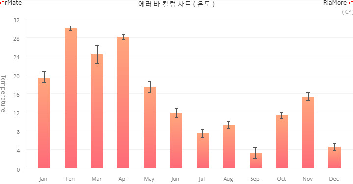
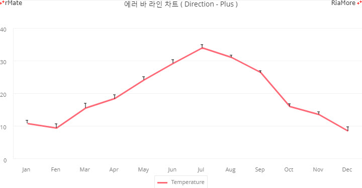
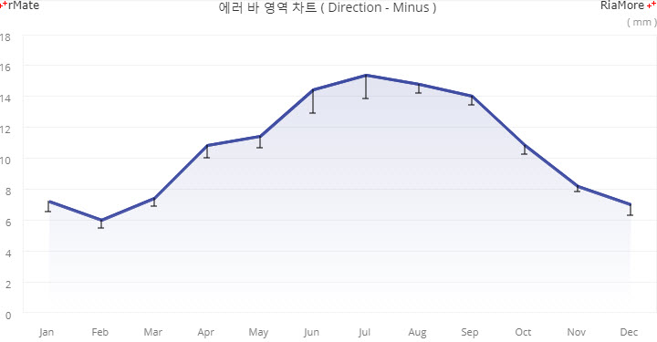
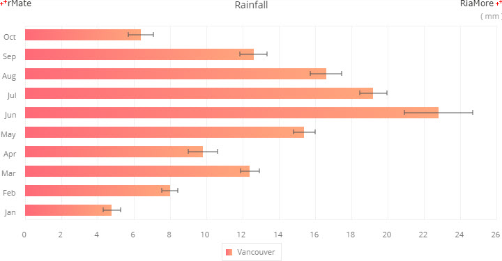
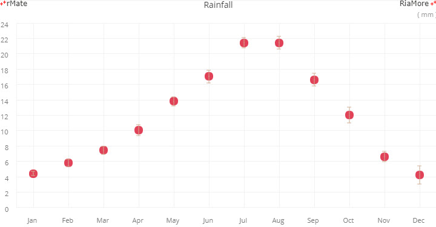

에러바 차트
에러바 차트는 데이터 값들의 표준 오차 값을 차트에 함께 표시합니다.
에러바를 차트에 표시하기 위해서는 데이터 시리즈 (<Column2DSeries>, <Bar2DSeries> 등) 노드의 showErrorBar 속성을 “true” 로 설정해야 합니다.
그리고 데이터 값에 해당하는 필드의 형식은 아래와 같이 값들의 배열이어야 합니다.
var chartData = [{
"Month" : "Jan",
"temperature" : [19,20.74,24.39,17.28,17.39,7.78,11.11,16.11,11,15,12.78,12,10,17.22,17,21.36,22.74,15,24.14,16,21.53,28.11,30.67,29.39,35.35,24,20,24,21,20]
},{
"Month" : "Fen",
"temperature" : [26.72,28.28,33.28,31.71,32.22,30.61,32,35,35,31.72,31.11,30,30,31.11,32.89,33.78,32,28,33,28,26,24.39,25.61,26,28,31,31,26,25,26]
},{
...
}];
다음은 차트에 에러바를 표현하는데 필요한 주요 속성에 대한 설명입니다.
| 속성명 |
유효값 (*: 기본값) |
설명 |
| showErrorBar |
true, false(*)
|
차트에 에러바를 표시할 지 여부를 설정합니다. |
| errorBarDirection |
both(*), plus, minus
|
에러바 표시 방법을 지정합니다.
plus: 최대 표준 오차만 표시합니다.
minus: 최소 표준 오차만 표시합니다.
both: 최대, 최소 표준 오차 모두를 표시합니다.
|
| errorBarFixedValue |
숫자
|
오차 범위에 고정값을 지정합니다.
|
| errorBarLength |
숫자
|
차트에 표시되는 오차 범위의 가로 크기를 지정합니다.
|
| errorBarPercentValue |
숫자
|
오차 범위의 백분율 값을 지정합니다.
|
| errorBarStroke |
<Stroke>
|
에러바의 선의 스타일을 지정합니다.
|
컬럼 차트에 에러바 표시
다음은 컬럼 차트에 에러바를 표시하는 코드와 이를 적용해서 출력한 차트의 예제입니다.
<Column2DChart showDataTips="true" dataTipFormatter="{cft}">
...
<series>
<Column2DSeries yField="temperature" displayName="Temperature" showErrorBar="true" errorBarDirection="both">
<errorBarStroke>
<Stroke color="#555555" weight="2"/>
</errorBarStroke>
...
</Column2DSeries>
</series>
</Column2DChart>

See the CodePen 알메이트 차트 - 컬럼 차트에 에러바 표시
라인 차트에 에러바 표시
다음은 라인 차트에 에러바를 표시하는 코드와 이를 적용해서 출력한 차트의 예제입니다.
<Line2DChart showDataTips="true" dataTipDisplayMode="axis" dataTipFormatter="{cft}">
...
<series>
<Line2DSeries yField="temperature" displayName="Temperature" showErrorBar="true" errorBarDirection="plus" errorBarLength="5">
...
</Line2DSeries>
</series>
</Line2DChart>

See the CodePen 알메이트 차트 - 라인 차트에 에러바 표시
위 예제에서는 에러바의 가로 크기를 5 (errorBarLength = “5”)로 지정하였고, 최대 표준 오차만 표시 (errorBarDirection = “plus”) 하도록 설정되었습니다.
영역 차트에 에러바 표시
다음은 영역 차트에 에러바를 표시하는 코드와 이를 적용해서 출력한 차트의 예제입니다.
<Area2DChart showDataTips="true" dataTipDisplayMode="axis">
...
<series>
<Area2DSeries yField="Vancouver" displayName="Vancouver" showErrorBar="true" errorBarDirection="minus">
...
</Area2DSeries>
</series>
</Area2DChart>

See the CodePen 알메이트 차트 - 영역 차트에 에러바 표시
위 예제에서는 최소 표준 오차만 표시 (errorBarDirection = “minus”) 하도록 설정되었습니다.
바 차트에 에러바 표시
다음은 바 차트에 에러바를 표시하는 코드와 이를 적용해서 출력한 차트의 예제입니다.
<Bar2DChart showDataTips="true">
...
<series>
<Bar2DSeries xField="Vancouver" displayName="Vancouver" showErrorBar="true">
...
</Bar2DSeries>
</series>
</Bar2DChart>

See the CodePen 알메이트 차트 - 바 차트에 에러바 표시
플롯 차트에 에러바 표시
다음은 플롯 차트에 에러바를 표시하는 코드와 이를 적용해서 출력한 차트의 예제입니다.
<Plot2DChart showDataTips="true">
...
<series>
<Plot2DSeries yField="Vancouver" displayName="Vancouver" showErrorBar="true" radius="7" itemRenderer="CircleItemRenderer">
...
</Plot2DSeries>
</series>
</Plot2DChart>

See the CodePen 알메이트 차트 - 플롯 차트에 에러바 표시